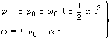

| Ecuaciones del movimiento circular 
|
||||||||||||
| Signos (•) No se pone signo a las variables φ, ω pues estas lo llevan incluido. Cuando φ, ω sean incógnitas al despejarlas se ob-tendrá el valor con su signo y cuando sean datos habrá que sustituir la variable por el valor con su signo En cambio hay que poner signo a los parámetros φ0, ω0, α pues estos representan el módulo de las magnitudes |